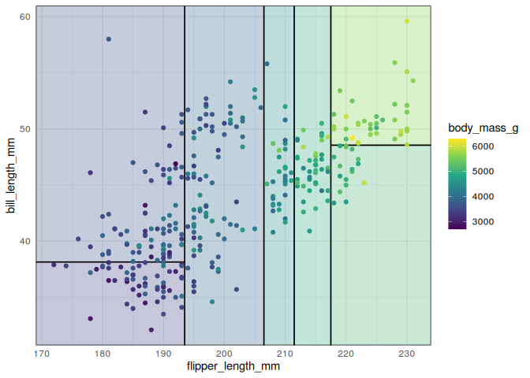
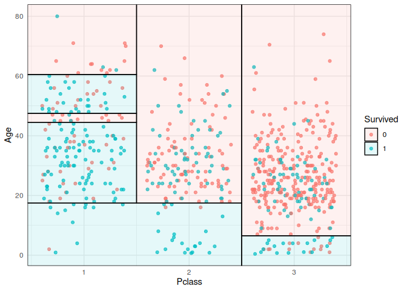
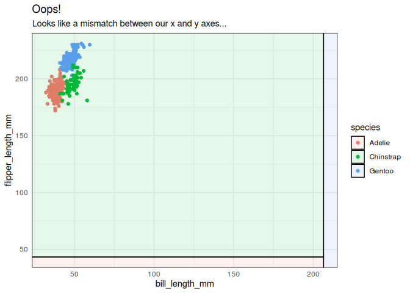

Visualize simple 2-D decision tree partitions in R. The parttree package is optimised to work with ggplot2, although it can be used to visualize tree partitions with base R graphics too.
Installation | Examples | Supported model classes | Plot orientation | Base graphics
Installation
This package is not yet on CRAN, but can be installed from GitHub with:
# install.packages("remotes")
remotes::install_github("grantmcdermott/parttree")Examples
The main function that users will interact with is geom_parttree(). Here’s a simple example using the palmerpenguins dataset.
library("palmerpenguins") ## For 'penguins' dataset
library("rpart") ## For fitting decisions trees
library("parttree") ## This package (will automatically load ggplot2 too)
#> Loading required package: ggplot2
## First construct a scatterplot of the raw penguin data
p = ggplot(data = penguins, aes(x = flipper_length_mm, y = bill_length_mm)) +
geom_point(aes(col = species)) +
theme_minimal()
## Fit a decision tree using the same variables as the above plot
tree = rpart(species ~ flipper_length_mm + bill_length_mm, data = penguins)
## Visualise the tree partitions by adding it via geom_parttree()
p +
geom_parttree(data = tree, aes(fill=species), alpha = 0.1) +
labs(caption = "Note: Points denote observed data. Shaded regions denote tree predictions.")
#> Warning: Using the `size` aesthetic in this geom was deprecated in ggplot2 3.4.0.
#> ℹ Please use `linewidth` in the `default_aes` field and elsewhere instead.
#> Warning: Removed 2 rows containing missing values (`geom_point()`).
Trees with continuous independent variables are also supported. However, I recommend adjusting the plot fill aesthetic, since your tree will likely partition the data into intervals that don’t match up exactly with the raw data.
tree2 = rpart(body_mass_g ~ flipper_length_mm + bill_length_mm, data=penguins)
p2 =
ggplot(data = penguins, aes(x = flipper_length_mm, y = bill_length_mm)) +
geom_parttree(data = tree2, aes(fill=body_mass_g), alpha = 0.3) +
geom_point(aes(col = body_mass_g)) +
theme_minimal()
## Legend scales don't quite match (try it yourself)
# p2
## Better to scale fill to the original data. This does the job but is still
## kind of hard to make out (again, try yourself)
# p2 +
# scale_fill_continuous(limits = range(penguins$body_mass_g, na.rm = TRUE))
## Best and simplest just to specify colour and fill aesthetics together in
## single palette
p2 +
scale_colour_viridis_c(aesthetics = c('colour', 'fill'))
#> Warning: Removed 2 rows containing missing values (`geom_point()`).
Supported model classes
Currently, the package works with decision trees created by the rpart and partykit packages. Moreover, it supports other front-end modes that call rpart::rpart() as the underlying engine; in particular the tidymodels (parsnip or workflows) and mlr3 packages. Here’s an example with parsnip.
library("parsnip")
library("titanic") ## Just for a different data set
set.seed(123) ## For consistent jitter
titanic_train$Survived = as.factor(titanic_train$Survived)
## Build our tree using parsnip (but with rpart as the model engine)
ti_tree =
decision_tree() %>%
set_engine("rpart") %>%
set_mode("classification") %>%
fit(Survived ~ Pclass + Age, data = titanic_train)
## Plot the data and model partitions
titanic_train %>%
ggplot(aes(x=Pclass, y=Age)) +
geom_jitter(aes(col=Survived), alpha=0.7) +
geom_parttree(data = ti_tree, aes(fill=Survived), alpha = 0.1) +
theme_minimal()
#> Warning: Removed 177 rows containing missing values (`geom_point()`).
Plot orientation
Underneath the hood, geom_parttree() is calling the companion parttree() function, which coerces the rpart tree object into a data frame that is easily understood by ggplot2. For example, consider again our first “tree” model from earlier. Here’s the print output of the raw model.
tree
#> n=342 (2 observations deleted due to missingness)
#>
#> node), split, n, loss, yval, (yprob)
#> * denotes terminal node
#>
#> 1) root 342 191 Adelie (0.441520468 0.198830409 0.359649123)
#> 2) flipper_length_mm< 206.5 213 64 Adelie (0.699530516 0.295774648 0.004694836)
#> 4) bill_length_mm< 43.35 150 5 Adelie (0.966666667 0.033333333 0.000000000) *
#> 5) bill_length_mm>=43.35 63 5 Chinstrap (0.063492063 0.920634921 0.015873016) *
#> 3) flipper_length_mm>=206.5 129 7 Gentoo (0.015503876 0.038759690 0.945736434) *And here’s what we get after we feed it to parttree().
parttree(tree)
#> node species path xmin
#> 1 3 Gentoo flipper_length_mm >= 206.5 206.5
#> 2 4 Adelie flipper_length_mm < 206.5 --> bill_length_mm < 43.35 -Inf
#> 3 5 Chinstrap flipper_length_mm < 206.5 --> bill_length_mm >= 43.35 -Inf
#> xmax ymin ymax
#> 1 Inf -Inf Inf
#> 2 206.5 -Inf 43.35
#> 3 206.5 43.35 InfAgain, the resulting data frame is designed to be amenable to a ggplot2 geom layer, with columns like xmin, xmax, etc. specifying aesthetics that ggplot2 recognises. (Fun fact: geom_parttree() is really just a thin wrapper around geom_rect().) The goal of the package is to abstract away these kinds of details from the user, so we can just specify geom_parttree() — with a valid tree object as the data input — and be done with it. However, while this generally works well, it can sometimes lead to unexpected behaviour in terms of plot orientation. That’s because it’s hard to guess ahead of time what the user will specify as the x and y variables (i.e. axes) in their other plot layers. To see what I mean, let’s redo our penguin plot from earlier, but this time switch the axes in the main ggplot() call.
## First, redo our first plot but this time switch the x and y variables
p3 =
ggplot(
data = penguins,
aes(x = bill_length_mm, y = flipper_length_mm) ## Switched!
) +
geom_point(aes(col = species)) +
theme_minimal()
## Add on our tree (and some preemptive titling..)
p3 +
geom_parttree(data = tree, aes(fill = species), alpha = 0.1) +
labs(
title = "Oops!",
subtitle = "Looks like a mismatch between our x and y axes..."
)
#> Warning: Removed 2 rows containing missing values (`geom_point()`).
As was the case here, this kind of orientation mismatch is normally (hopefully) pretty easy to recognize. To fix, we can use the flipaxes = TRUE argument to flip the orientation of the geom_parttree layer.
p3 +
geom_parttree(
data = tree, aes(fill = species), alpha = 0.1,
flipaxes = TRUE ## Flip the orientation
) +
labs(title = "That's better")
#> Warning: Removed 2 rows containing missing values (`geom_point()`).
Base graphics
While the package has been primarily designed to work with ggplot2, the parttree() infrastructure can also be used to generate plots with base graphics. Here, the ctree() function from partykit is used for fitting the tree.
library("partykit")
#> Loading required package: grid
#> Loading required package: libcoin
#> Loading required package: mvtnorm
## CTree and corresponding partition
ct = ctree(species ~ flipper_length_mm + bill_length_mm, data = penguins)
pt = parttree(ct)
## Color palette
pal = palette.colors(4, "R4")[-1]
## Maximum/minimum for plotting range as rect() does not handle Inf well
m = 1000
## scatter plot() with added rect()
plot(bill_length_mm ~ flipper_length_mm, data = penguins, col = pal[species], pch = 19)
rect(pmax(-m, pt$xmin), pmax(-m, pt$ymin), pmin(m, pt$xmax), pmin(m, pt$ymax),
col = adjustcolor(pal, alpha.f = 0.1)[pt$species])